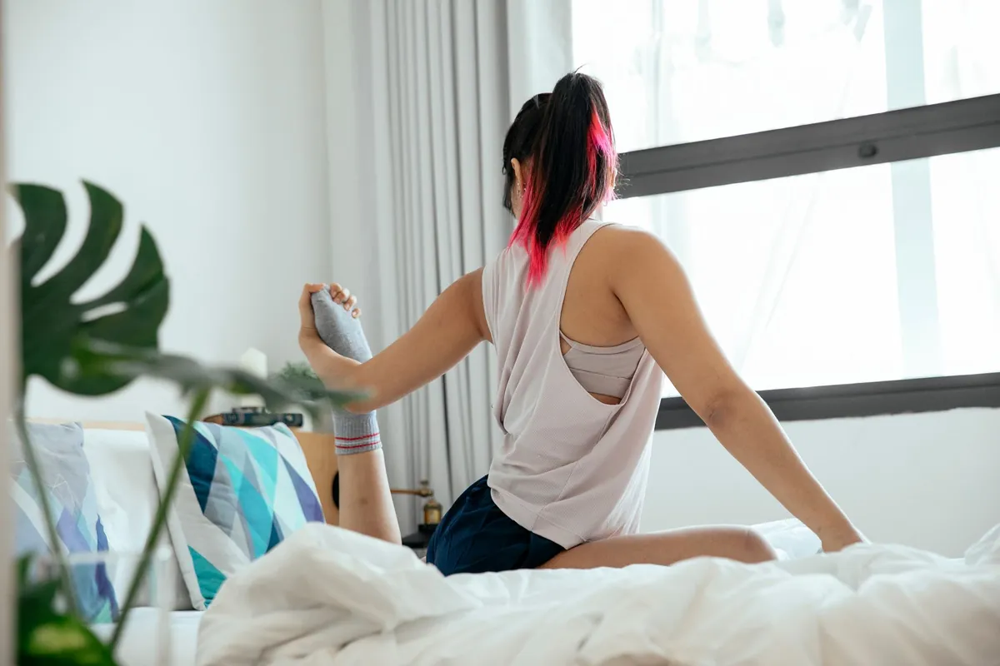
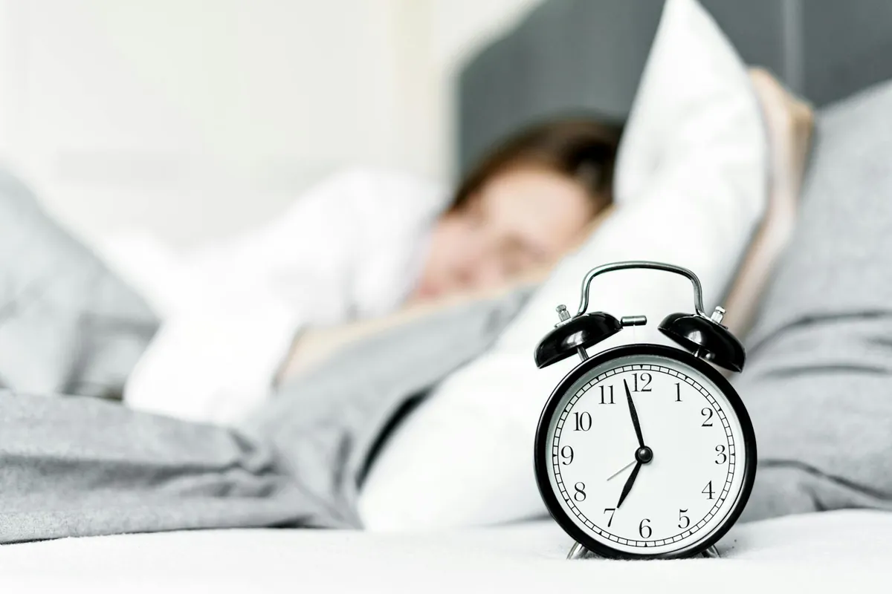

Unlock Better Sleep: Quality Sleep Strategies for Optimal Health & Energy

Key takeaways
- I used to be the queen of tossing and turning.
- For years, I thought being tired was just part of the deal, especially after a long day wrangling kids and deadlines.
- Track what feels sustainable and adjust gradually.
I used to be the queen of tossing and turning. For years, I thought being tired was just part of the deal, especially after a long day wrangling kids and deadlines. My bedroom felt more like a battleground than a sanctuary. Then, one morning, after another night of staring at the ceiling at 3 AM, I realized something had to change. I was determined to Unlock Better Sleep: Quality Sleep Strategies for Optimal Health & Energy, and I want to share what I learned with you. It’s not about perfection; it’s about progress.
My journey to better sleep wasn't a straight line. I tried everything from blackout curtains to counting sheep (which never worked for me, by the way). The real breakthrough came when I started looking at sleep not as a passive event, but as an active process that I could influence. It’s about creating the right conditions for your body and mind to truly rest and recharge. This means paying attention to the little things that add up.
Let's start with your sleep environment. It's more than just a dark room. Think about temperature: most people sleep best in a cooler room, around 60-67 degrees Fahrenheit. I found that even a couple of degrees made a difference for me. Also, consider noise. A consistent, low-level sound, like a white noise machine or a fan, can be more effective than complete silence, which can make you hyper-aware of every little creak. And light? Beyond blackout curtains, even the tiny LED lights on your electronics can disrupt melatonin production. Use tape or turn devices away from your bed.
The food we eat plays a HUGE role in our sleep quality. I used to grab whatever was easy, often late at night, and then wonder why I was wired. It turns out, heavy meals too close to bedtime can cause indigestion and discomfort. And caffeine? We all know it keeps us awake, but its effects linger longer than we think. Try to cut off caffeine at least six hours before bed. Even alcohol, which might make you feel sleepy initially, actually disrupts sleep architecture, leading to more wakefulness later in the night. Focusing on a balanced diet can be a related healthy tip you might find helpful.
Exercise is another cornerstone. I used to think any exercise was good, but timing matters. Intense workouts too close to bedtime can energize you when you need to wind down. Aim for moderate exercise earlier in the day. Even a brisk walk can significantly improve sleep quality. If you're looking for ways to incorporate movement, check out this practical guide to home workouts. Consistency is key, and finding a routine that works for you is part of another practical guide on similar wellness insights.
My personal favorite sleep hack? A wind-down routine. It’s not about forcing yourself to sleep, but signaling to your body that it’s time to transition. This could be reading a physical book (not on a screen!), taking a warm bath, or gentle stretching. I found that even 30 minutes of quiet, screen-free time before bed made a world of difference. It’s about creating a buffer zone between your busy day and your rest.
The 2-Minute Win
Right now, as you're reading this, take a moment to assess your bedroom. Is there a bright light from a device? Is your thermostat set too high? Make one small adjustment. Turn off a light, lower the temperature by a degree, or unplug a charging phone that's not actively being used. This immediate action can start building better sleep habits.
For a truly deep sleep, consider incorporating a tablespoon of Extra Virgin Olive Oil before bed. Its anti-inflammatory properties can help reduce bodily stress, and some studies suggest it may positively impact sleep hormones. It's a simple, natural addition that I've found surprisingly effective. You can find some great options here.
It's easy to get discouraged if one night doesn't go perfectly. I’ve been there. The goal is to Unlock Better Sleep: Quality Sleep Strategies for Optimal Health & Energy over time. Don't beat yourself up if you have an off night. Just get back on track the next day. Maintaining this focus is crucial to stay consistent with this approach to wellness.
Remember, this is about making sustainable changes. Small, consistent efforts are more powerful than grand, short-lived ones. Explore more sleep guides to continue your journey to better rest and improved daily energy.
Educational only — not medical advice.
Disclosure: This page may contain affiliate links.
Recommended Reading
- Small Changes, Big Health Wins: Habits That Actually Stick
- Unlock Better Sleep: Natural Tips for Deeper Rest & Energy
- What Daily Routines Truly Lower Stress Levels?
More in sleep
 sleep
sleepUnlock Your Best Sleep: Energy & Focus Boosting Secrets for Americans
Struggling with fatigue and brain fog? Unlock your best sleep and boost energy & focus with science-backed secrets for A
Read article →Biohacking Your Sleep: Natural Ways to Boost Energy & Focus
Struggling with energy and focus? Discover natural biohacking techniques for better sleep. Learn to reduce grogginess an
Read article →Related posts
sleepUnlock Your Best Sleep: Energy & Focus Boosting Secrets for Americans
Struggling with fatigue and brain fog? Unlock your best sleep and boost energy & focus with science-backed secrets for A
Read article →Biohacking Your Sleep: Natural Ways to Boost Energy & Focus
Struggling with energy and focus? Discover natural biohacking techniques for better sleep. Learn to reduce grogginess an
Read article →
sleepUnlock Your Metabolism: The Sleep Secrets for Sustainable Weight Loss
Struggling with weight loss? Discover how to unlock your metabolism through sleep secrets for sustainable results. Learn
Read article →